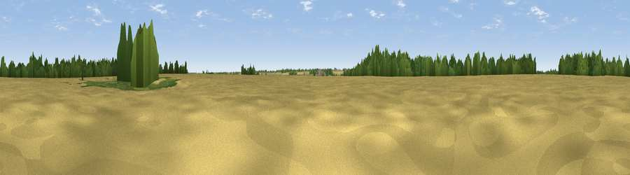

Viewpoint near Welby
#41298 in England · top 72% of its area beats it · near WelbyThe view, rendered

A 360° render of this exact spot computed from the terrain model, tree cover and land cover — summer colours, afternoon light, calibrated against photographs of famous viewpoints. Real trees, hedges and buildings will differ in detail.
The panorama
Grey silhouette: terrain skyline in each direction (720 bearings, Earth curvature and refraction included). Dashed green: skyline with trees (+15 m) and buildings (+8 m) as obstacles. Blue strip: how far the ground is visible on each bearing.
Where the view opens
Wedge length = distance to the farthest visible ground on that bearing (vegetation-aware). Rings at 10, 25 and 50 km.
What fills the view
74% cropland · 16% woodland · 8% grassland · 1% built-up
Angular shares of the visible panorama (visual magnitude), not map area. Landscape diversity 0.35 (0–1 Shannon).
Key numbers
More beautiful places nearby
The staircase of upgrades: each row has a higher view potential than everything closer. Driving times are estimates from straight-line distance, calibrated against real road routing — check an actual route before setting out.
| Place | Direction | Drive | Score |
|---|---|---|---|
| Viewpoint near Belton | WNW · 0 km | ~2 min | 51.0 |
| Viewpoint near Great Gonerby | W · 5 km | ~11 min | 52.5 |
| Viewpoint near Great Gonerby | W · 6 km | ~12 min | 62.0 |
| Viewpoint near Belvoir | WSW · 15 km | ~26 min | 70.8 |
| Broombriggs Hill | WSW · 51 km | ~72 min | 74.4 |
| Viewpoint near Woodhouse Eaves | WSW · 51 km | ~72 min | 77.7 |
| Viewpoint near Mow Cop | W · 111 km | ~135 min | 78.9 |
| Viewpoint near Mow Cop | W · 111 km | ~135 min | 80.2 |
52.94567, -0.58029 · source: osm peak · position refined by local search. Computed location — check access rights before visiting.